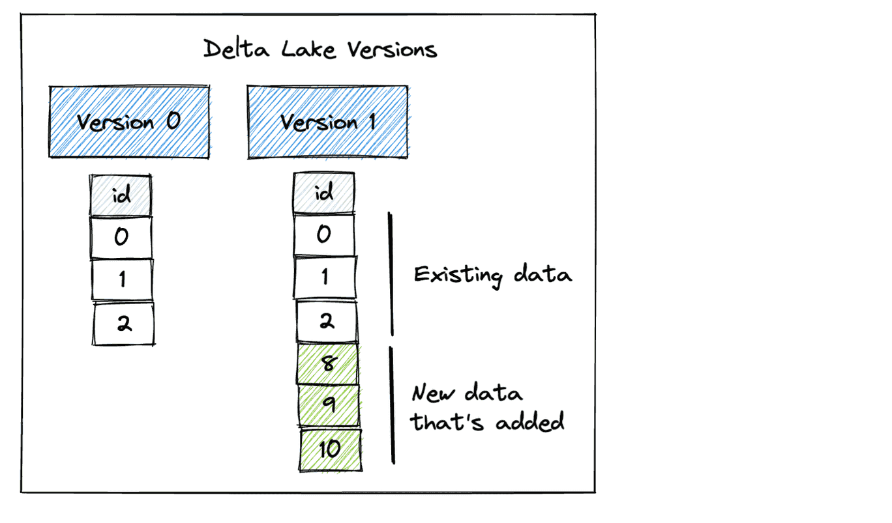

6.12. Better Pandas#
This section cover tools to make your experience with Pandas a litte bit better.
6.12.1. tqdm: Add Progress Bar to Your Pandas Apply#
Show code cell content
!pip install tqdm
If you want to keep informed about the progress of a pandas apply operation, use tqdm.
import pandas as pd
from tqdm import tqdm
import time
df = pd.DataFrame({'a': [1, 2, 3, 4, 5], 'b': [2, 3, 4, 5, 6]})
tqdm.pandas()
def func(row):
time.sleep(1)
return row + 1
df['a'].progress_apply(func)
100%|████████████████████████████████████████████████████████████████████████████████████████████████████████████████████| 5/5 [00:05<00:00, 1.00s/it]
0 2
1 3
2 4
3 5
4 6
Name: a, dtype: int64
6.12.2. pandarallel: A Simple Tool to Parallelize Pandas Operations#
Show code cell content
!pip install pandarallel
If you want to parallelize your Pandas operations on all available CPUs by adding only one line of code, try pandarallel.
from pandarallel import pandarallel
import pandas as pd
from numpy.random import randint
df = pd.DataFrame(
{
"a": randint(0, 100, size=10000),
"b": randint(0, 100, size=10000),
"c": randint(0, 100, size=10000),
}
)
pandarallel.initialize(progress_bar=True)
df.parallel_apply(lambda x: x**2)
INFO: Pandarallel will run on 8 workers.
INFO: Pandarallel will use standard multiprocessing data transfer (pipe) to transfer data between the main process and workers.
| a | b | c | |
|---|---|---|---|
| 0 | 3025 | 324 | 441 |
| 1 | 1 | 6561 | 5329 |
| 2 | 2025 | 4900 | 1024 |
| 3 | 25 | 5776 | 25 |
| 4 | 16 | 8100 | 3364 |
| ... | ... | ... | ... |
| 9995 | 49 | 676 | 4761 |
| 9996 | 3721 | 6889 | 4 |
| 9997 | 4225 | 9025 | 1156 |
| 9998 | 361 | 9 | 529 |
| 9999 | 5041 | 25 | 81 |
10000 rows × 3 columns
6.12.3. PandasAI: Gain Insights From Your pandas DataFrame With AI#
Show code cell content
!pip install pandasai
If you want to quickly gain insights from your pandas DataFrame with AI, use PandasAI. PandasAI serves as:
A tool to analyze your DataFrame
Not a tool to process your DataFrame
import pandas as pd
df = pd.read_csv("https://raw.githubusercontent.com/mwaskom/seaborn-data/master/flights.csv")
df.head(10)
| year | month | passengers | |
|---|---|---|---|
| 0 | 1949 | January | 112 |
| 1 | 1949 | February | 118 |
| 2 | 1949 | March | 132 |
| 3 | 1949 | April | 129 |
| 4 | 1949 | May | 121 |
| 5 | 1949 | June | 135 |
| 6 | 1949 | July | 148 |
| 7 | 1949 | August | 148 |
| 8 | 1949 | September | 136 |
| 9 | 1949 | October | 119 |
df.head(5)
| year | month | passengers | |
|---|---|---|---|
| 0 | 1949 | January | 112 |
| 1 | 1949 | February | 118 |
| 2 | 1949 | March | 132 |
| 3 | 1949 | April | 129 |
| 4 | 1949 | May | 121 |
from pandasai import PandasAI
from pandasai.llm.openai import OpenAI
# Instantiate a LLM
llm = OpenAI(api_token="YOUR_API_TOKEN")
# Use pandasai
pandas_ai = PandasAI(llm, conversational=False)
print(
pandas_ai.run(
df,
prompt="Which month of the years has the highest number of passengers on average?",
)
)
The month with the highest average number of passengers is: July
print(
pandas_ai.run(
df, prompt="Which are the five years with the highest passenger numbers?"
)
)
year
1960 5714
1959 5140
1958 4572
1957 4421
1956 3939
Name: passengers, dtype: int64
print(pandas_ai.run(df, prompt="Within what range of years does the dataset span?"))
year month passengers
0 1949-01-01 January 112
1 1949-01-01 February 118
2 1949-01-01 March 132
3 1949-01-01 April 129
4 1949-01-01 May 121
The dataset spans from 1949 to 1960.
6.12.4. fugue: Use pandas Functions on the Spark and Dask Engines.#
Show code cell content
!pip install fugue pyspark
Wouldn’t it be nice if you can leverage Spark or Dask to parallelize data science workloads using pandas syntax? Fugue allows you to do exactly that.
Fugue provides the transform function allowing users to use pandas functions on the Spark and Dask engines.
import pandas as pd
from typing import Dict
from fugue import transform
from fugue_spark import SparkExecutionEngine
input_df = pd.DataFrame({"id": [0, 1, 2], "fruit": (["apple", "banana", "orange"])})
map_price = {"apple": 2, "banana": 1, "orange": 3}
def map_price_to_fruit(df: pd.DataFrame, mapping: dict) -> pd.DataFrame:
df["price"] = df["fruit"].map(mapping)
return df
df = transform(
input_df,
map_price_to_fruit,
schema="*, price:int",
params=dict(mapping=map_price),
engine=SparkExecutionEngine,
)
df.show()
21/10/01 11:17:05 WARN Utils: Your hostname, khuyen-Precision-7740 resolves to a loopback address: 127.0.1.1; using 192.168.1.90 instead (on interface wlp111s0)
21/10/01 11:17:05 WARN Utils: Set SPARK_LOCAL_IP if you need to bind to another address
WARNING: An illegal reflective access operation has occurred
WARNING: Illegal reflective access by org.apache.spark.unsafe.Platform (file:/home/khuyen/book/venv/lib/python3.8/site-packages/pyspark/jars/spark-unsafe_2.12-3.1.2.jar) to constructor java.nio.DirectByteBuffer(long,int)
WARNING: Please consider reporting this to the maintainers of org.apache.spark.unsafe.Platform
WARNING: Use --illegal-access=warn to enable warnings of further illegal reflective access operations
WARNING: All illegal access operations will be denied in a future release
21/10/01 11:17:05 WARN NativeCodeLoader: Unable to load native-hadoop library for your platform... using builtin-java classes where applicable
Using Spark's default log4j profile: org/apache/spark/log4j-defaults.properties
Setting default log level to "WARN".
To adjust logging level use sc.setLogLevel(newLevel). For SparkR, use setLogLevel(newLevel).
21/10/01 11:17:06 WARN Utils: Service 'SparkUI' could not bind on port 4040. Attempting port 4041.
[Stage 2:===============> (3 + 8) / 11]
+---+------+-----+
| id| fruit|price|
+---+------+-----+
| 0| apple| 2|
| 1|banana| 1|
| 2|orange| 3|
+---+------+-----+
[Stage 2:==========================================> (8 + 3) / 11]
6.12.5. Version Your Pandas DataFrame with Delta Lake#
Show code cell content
!pip install deltalake
Versioning your data is essential to undoing mistakes, preventing data loss, and ensuring reproducibility. Delta Lake makes it easy to version pandas DataFrames and review past changes for auditing and debugging purposes.
To version a pandas DataFrame with Delta Lake, start with writing out a pandas DataFrame to a Delta table.
import pandas as pd
import os
from deltalake.writer import write_deltalake
df = pd.DataFrame({"x": [1, 2, 3]})
# Write to a delta table
table = "delta_lake"
os.makedirs(table, exist_ok=True)
write_deltalake(table, df)
Delta Lake stores the data in a Parquet file and maintains a transaction log that records the data operations, enabling time travel and versioning.
delta_lake:
├── 0-4719861e-1d3a-49f8-8870-225e4e46e3a0-0.parquet
└── _delta_log/
│ └──── 00000000000000000000.json
To load the Delta table as a pandas DataFrame, simply use the DeltaTable object:
from deltalake import DeltaTable
dt = DeltaTable(table)
dt.to_pandas()
| x | |
|---|---|
| 0 | 1 |
| 1 | 2 |
| 2 | 3 |
Let’s see what happens when we append another pandas DataFrame to the Delta table.
df2 = pd.DataFrame({"x": [8, 9, 10]})
write_deltalake(table, df2, mode="append")
# Create delta table
dt = DeltaTable(table)
dt.to_pandas()
| x | |
|---|---|
| 0 | 1 |
| 1 | 2 |
| 2 | 3 |
| 3 | 8 |
| 4 | 9 |
| 5 | 10 |
Our Delta table now has two versions. Version 0 contains the initial data and Version 1 includes the data that was appended.

To get the metadata of files that currently make up the current table such as creation time, size, and statistics, call the get_add_actions method.
dt.get_add_actions(flatten=True).to_pandas()
| path | size_bytes | modification_time | data_change | num_records | null_count.x | min.x | max.x | |
|---|---|---|---|---|---|---|---|---|
| 0 | 0-67d190a5-29ed-4555-b946-319769c2226c-0.parquet | 580 | 2024-09-27 21:11:52.351 | True | 3 | 0 | 1 | 3 |
| 1 | 1-24a5cf2f-d7b8-4e0f-8bf5-a12f4d7e2f35-0.parquet | 580 | 2024-09-27 21:11:56.494 | True | 3 | 0 | 8 | 10 |
To access prior versions, simply specify the version number when loading the Delta table:
# Read Version 0 of the dataset
dt0 = DeltaTable(table, version=0)
dt0.to_pandas()
| x | |
|---|---|
| 0 | 1 |
| 1 | 2 |
| 2 | 3 |
6.12.6. Beyond Parquet: Reliable Data Storage with Delta Lake#
Traditional data storage methods, such as plain Parquet files, are susceptible to partial failures during write operations. This can result in incomplete data files and a lack of clear recovery options in the event of a system crash.
Delta Lake’s write operation with ACID transactions helps solve this by:
Ensuring either all data is written successfully or none of it is
Maintaining a transaction log that tracks all changes
Providing time travel capabilities to recover from failures
Here’s an example showing Delta Lake’s reliable write operation:
from deltalake import write_deltalake, DeltaTable
import pandas as pd
initial_data = pd.DataFrame({
"id": [1, 2],
"value": ["a", "b"]
})
write_deltalake("customers", initial_data)
If the append operation fails halfway, Delta Lake’s transaction log ensures that the table remains in its last valid state.
try:
# Simulate a large append that fails halfway
new_data = pd.DataFrame({
"id": range(3, 1003), # 1000 new rows
"value": ["error"] * 1000
})
# Simulate system crash during append
raise Exception("System crash during append!")
write_deltalake("customers", new_data, mode="append")
except Exception as e:
print(f"Write failed: {e}")
# Check table state - still contains only initial data
dt = DeltaTable("customers")
print("\nTable state after failed append:")
print(dt.to_pandas())
# Verify version history
print(f"\nCurrent version: {dt.version()}")
Write failed: System crash during append!
Table state after failed append:
id value
0 1 a
1 2 b
Current version: 0
6.12.7. Optimize Query Speed with Data Partitioning#
Partitioning data allows queries to target specific segments rather than scanning the entire table, which speeds up data retrieval.
The following code uses Delta Lake to select partitions from a pandas DataFrame. Partitioned data loading is approximately 24.5 times faster than loading the complete dataset and then querying a particular subset
import pandas as pd
from deltalake.writer import write_deltalake
from deltalake import DeltaTable
from datetime import datetime
import numpy as np
# Create a DataFrame with hourly sales data for 2 million records
np.random.seed(0) # For reproducibility
start_date = datetime(2023, 1, 1)
end_date = datetime(2023, 8, 31)
date_range = pd.date_range(start_date, end_date, freq='H')
data = {
'datetime': date_range,
'value': np.random.randint(100, 1000, len(date_range))
}
df = pd.DataFrame(data)
df['month'] = df['datetime'].dt.month
df['day'] = df['datetime'].dt.day
df['hour'] = df['datetime'].dt.hour
df[["month", "day", "hour", "value"]].head(5)
| month | day | hour | value | |
|---|---|---|---|---|
| 0 | 1 | 1 | 0 | 784 |
| 1 | 1 | 1 | 1 | 659 |
| 2 | 1 | 1 | 2 | 729 |
| 3 | 1 | 1 | 3 | 292 |
| 4 | 1 | 1 | 4 | 935 |
# Write to a Delta table
table_path = 'delta_lake'
write_deltalake(table_path, df)
%%timeit
# Load the data from the Delta table
DeltaTable(table_path).to_pandas().query("month == 1 & day == 1")
79.2 ms ± 2.62 ms per loop (mean ± std. dev. of 7 runs, 1 loop each)
# Write to a Delta table
table_path = "delta_lake2"
write_deltalake(table_path, df, partition_by=["month", "day"])
%%timeit
# Load the data from the Delta table
DeltaTable(table_path).to_pandas([("month", "=", "1"), ("day", "=", "1")])
3.23 ms ± 181 µs per loop (mean ± std. dev. of 7 runs, 100 loops each)
6.12.8. Overwrite Partitions of a pandas DataFrame#
Show code cell content
!pip install deltalake
If you need to modify a specific subset of your pandas DataFrame, such as yesterday’s data, it is not possible to overwrite only that partition. Instead, you have to load the entire DataFrame into memory as a workaround solution.
Delta Lake makes it easy to overwrite partitions of a pandas DataFrame.
First, write out a pandas DataFrame as a Delta table that is partitioned by the date column.
import pandas as pd
from deltalake.writer import write_deltalake
from deltalake import DeltaTable
table_path = "tmp/records"
df = pd.DataFrame(
{"a": [1, 2, 3], "date": ["04-21", "04-22", "04-22"]}
)
write_deltalake(
table_path,
df,
partition_by=["date"],
)
The Delta table’s contents are partitioned by date, with each partition represented by a directory
└── _delta_log/
│ └──── 00000000000000000000.json
└── date=04-21/
│ └──── 0-a6813d0c-157b-4ca6-8b3c-8d5afd51947c-0.parquet
└── date=04-22/
│ └──── 0-a6813d0c-157b-4ca6-8b3c-8d5afd51947c-0.parquet
View the Delta table as a pandas DataFrame:
DeltaTable(table_path).to_pandas()
| a | date | |
|---|---|---|
| 0 | 2 | 04-22 |
| 1 | 3 | 04-22 |
| 2 | 1 | 04-21 |
Next, create another DataFrame with two other records on 04-22. Overwrite the 04-22 partition with the new DataFrame and leave other partitions untouched.
df = pd.DataFrame(
{"a": [7, 8], "date": ["04-22", "04-22"]}
)
write_deltalake(
table_path,
df,
mode="overwrite",
partition_filters=[("date", "=", "04-22")],
)
DeltaTable(table_path).to_pandas()
| a | date | |
|---|---|---|
| 0 | 1 | 04-21 |
| 1 | 7 | 04-22 |
| 2 | 8 | 04-22 |
Here is the updated contents of the Delta table:
└── _delta_log/
│ └──── 00000000000000000000.json
│ └──── 00000000000000000001.json
└── date=04-21/
│ └──── 0-a6813d0c-157b-4ca6-8b3c-8d5afd51947c-0.parquet
└── date=04-22/
│ ├──── 0-a6813d0c-157b-4ca6-8b3c-8d5afd51947c-0.parquet
│ └──── 1-b5c9640f-f386-4754-b28f-90e361ab4320-0.parquet
Since the data files are not physically removed from disk, you can time travel to the initial version of the data.
DeltaTable(table_path, version=0).to_pandas()
| a | date | |
|---|---|---|
| 0 | 2 | 04-22 |
| 1 | 3 | 04-22 |
| 2 | 1 | 04-21 |
6.12.9. Efficient Data Appending in Parquet Files: Delta Lake vs. Pandas#
Show code cell content
!pip install deltalake
Appending data to an existing Parquet file using pandas involves:
Loading the entire existing table into memory.
Merging the new data with the existing table.
Writing the merged data to the existing file.
This process can be time-consuming and memory-intensive.
import pandas as pd
df1 = pd.DataFrame([
(1, "John", 5000),
(2, "Jane", 6000),
], columns=["employee_id", "employee_name", "salary"])
df2 = pd.DataFrame([
(3, "Alex", 8000),
], columns=["employee_id", "employee_name", "salary"])
# Save to a parquet file
df1.to_parquet("data.parquet")
# Read the data
existing_data = pd.read_parquet("data.parquet")
# Concat two dataframes
df3 = pd.concat([df1, df2])
# Save to a file
df3.to_parquet("data.parquet")
Delta Lake offers a more efficient approach to handling this process. With Delta Lake, you can add, remove, or modify columns without the need to recreate the entire table.
Delta Lake is also built on top of the Parquet file format so it retains the efficiency and columnar storage benefits of Parquet.
from deltalake.writer import write_deltalake
table_path = "employees"
# Write to Delta Lake
write_deltalake(table_path, df1)
# Append to Delta Lake
write_deltalake(table_path, df2, mode="append")
6.12.10. Enforce Data Quality with Delta Lake Constraints#
Delta Lake provides a convenient way to enforce data quality by adding constraints to a table, ensuring that only valid and consistent data can be added.
In the provided code, attempting to add new data with a negative salary violates the constraint of a positive salary, and thus, the data is not added to the table.
Show code cell content
!pip install deltalake
import pandas as pd
from deltalake.writer import write_deltalake
from deltalake import DeltaTable
table_path = "delta_lake"
df1 = pd.DataFrame(
[
(1, "John", 5000),
(2, "Jane", 6000),
],
columns=["employee_id", "employee_name", "salary"],
)
write_deltalake(table_path, df1)
df1
| employee_id | employee_name | salary | |
|---|---|---|---|
| 0 | 1 | John | 5000 |
| 1 | 2 | Jane | 6000 |
table = DeltaTable(table_path)
table.alter.add_constraint({"salary_gt_0": "salary > 0"})
df2 = pd.DataFrame(
[(3, "Alex", -200)],
columns=["employee_id", "employee_name", "salary"],
)
write_deltalake(table, df2, mode="append", engine="rust")
DeltaProtocolError: Invariant violations: ["Check or Invariant (salary > 0) violated by value in row: [3, Alex, -200]"]
6.12.11. Efficient Data Updates and Scanning with Delta Lake#
Show code cell content
!pip install -U "deltalake==0.10.1"
Every time new data is appended to an existing Delta table, a new Parquet file is generated. This allows data to be ingested incrementally without having to rewrite the entire dataset.
As files accumulate, read operations may surge. The compact function merges small files into larger ones, enhancing scanning performance.
Combining incremental processing with the compact function enables efficient data updates and scans as your dataset expands.
import pandas as pd
from deltalake.writer import write_deltalake
table_path = 'delta_lake'
data_url = "https://gist.githubusercontent.com/khuyentran1401/458905fc5c630d7a1f7a510a04e5e0f9/raw/5b2d760011c9255a68eb08b83b3b8759ffa25d5c/data.csv"
dfs = pd.read_csv(data_url, chunksize=100)
for df in dfs:
write_deltalake(table_path, df, mode="append")
from deltalake import DeltaTable
dt = DeltaTable(table_path)
%%timeit
df = dt.to_pandas()
30.6 ms ± 2.94 ms per loop (mean ± std. dev. of 7 runs, 10 loops each)
dt.optimize.compact()
{'numFilesAdded': 1,
'numFilesRemoved': 100,
'filesAdded': {'min': 278115,
'max': 278115,
'avg': 278115.0,
'totalFiles': 1,
'totalSize': 278115},
'filesRemoved': {'min': 5712,
'max': 5717,
'avg': 5715.8,
'totalFiles': 100,
'totalSize': 571580},
'partitionsOptimized': 1,
'numBatches': 100,
'totalConsideredFiles': 100,
'totalFilesSkipped': 0,
'preserveInsertionOrder': True}
%%timeit
df = dt.to_pandas()
1.32 ms ± 49 µs per loop (mean ± std. dev. of 7 runs, 1,000 loops each)
6.12.12. Simplify Table Merge Operations with Delta Lake#
Show code cell content
!pip install delta-spark
Merging two datasets and performing both insert and update operations can be a complex task.
Delta Lake makes it easy to perform multiple data manipulation operations during a merge operation.
The following code demonstrates merging two datasets using Delta Lake:
If a match is found, the
last_talkcolumn inpeople_tableis updated with the corresponding value fromnew_df.If the
last_talkvalue inpeople_tableis older than 30 days and the corresponding row is not present in thenew_dftable, thestatuscolumn is updated to ‘rejected’.
Show code cell content
import pyspark
from delta import *
# Configure Spark to use Delta
builder = (
pyspark.sql.SparkSession.builder.appName("MyApp")
.config("spark.sql.extensions", "io.delta.sql.DeltaSparkSessionExtension")
.config(
"spark.sql.catalog.spark_catalog",
"org.apache.spark.sql.delta.catalog.DeltaCatalog",
)
)
spark = configure_spark_with_delta_pip(builder).getOrCreate()
:: loading settings :: url = jar:file:/Users/khuyentran/book/venv/lib/python3.11/site-packages/pyspark/jars/ivy-2.5.1.jar!/org/apache/ivy/core/settings/ivysettings.xml
Ivy Default Cache set to: /Users/khuyentran/.ivy2/cache
The jars for the packages stored in: /Users/khuyentran/.ivy2/jars
io.delta#delta-spark_2.12 added as a dependency
:: resolving dependencies :: org.apache.spark#spark-submit-parent-3f072ef1-cd28-41e1-8ccd-8da112101571;1.0
confs: [default]
found io.delta#delta-spark_2.12;3.2.0 in central
found io.delta#delta-storage;3.2.0 in central
found org.antlr#antlr4-runtime;4.9.3 in central
:: resolution report :: resolve 295ms :: artifacts dl 18ms
:: modules in use:
io.delta#delta-spark_2.12;3.2.0 from central in [default]
io.delta#delta-storage;3.2.0 from central in [default]
org.antlr#antlr4-runtime;4.9.3 from central in [default]
---------------------------------------------------------------------
| | modules || artifacts |
| conf | number| search|dwnlded|evicted|| number|dwnlded|
---------------------------------------------------------------------
| default | 3 | 0 | 0 | 0 || 3 | 0 |
---------------------------------------------------------------------
:: retrieving :: org.apache.spark#spark-submit-parent-3f072ef1-cd28-41e1-8ccd-8da112101571
confs: [default]
0 artifacts copied, 3 already retrieved (0kB/12ms)
24/09/29 14:32:49 WARN NativeCodeLoader: Unable to load native-hadoop library for your platform... using builtin-java classes where applicable
Setting default log level to "WARN".
To adjust logging level use sc.setLogLevel(newLevel). For SparkR, use setLogLevel(newLevel).
Show code cell content
# Create a spark dataframe
data = [
(0, "A", "2023-04-15", "interviewing"),
(1, "B", "2023-05-01", "interviewing"),
(2, "C", "2023-03-01", "interviewing"),
]
df = (
spark.createDataFrame(data)
.toDF("id", "company", "last_talk", "status")
.repartition(1)
)
# Write to a delta table
path = "tmp/interviews"
df.write.format("delta").save(path)
Show code cell content
from delta.tables import DeltaTable
# Update the delta table
people_table = DeltaTable.forPath(spark, path)
# Target table
people_table.toDF().show()
24/09/29 14:33:18 WARN SparkStringUtils: Truncated the string representation of a plan since it was too large. This behavior can be adjusted by setting 'spark.sql.debug.maxToStringFields'.
+---+-------+----------+------------+
| id|company| last_talk| status|
+---+-------+----------+------------+
| 0| A|2023-04-15|interviewing|
| 1| B|2023-05-01|interviewing|
| 2| C|2023-03-01|interviewing|
+---+-------+----------+------------+
Show code cell content
new_data = [(0, "A", "2023-05-07")]
new_df = (
spark.createDataFrame(new_data).toDF("id", "company", "last_talk").repartition(1)
)
# Source table
new_df.show()
+---+-------+----------+
| id|company| last_talk|
+---+-------+----------+
| 0| A|2023-05-07|
+---+-------+----------+
one_month_ago = "current_date() - INTERVAL '30' DAY"
people_table.alias("target").merge(
new_df.alias("source"), "target.id = source.id"
).whenMatchedUpdate(
set={"target.last_talk": "source.last_talk", "target.status": "'interviewing'"}
).whenNotMatchedBySourceUpdate(
condition=f"target.last_talk <= {one_month_ago}",
set={"target.status": "'rejected'"},
).execute()
people_table.toDF().show()
+---+-------+----------+------------+
| id|company| last_talk| status|
+---+-------+----------+------------+
| 0| A|2023-05-07|interviewing|
| 1| B|2023-05-01|interviewing|
| 2| C|2023-03-01| rejected|
+---+-------+----------+------------+
6.12.13. From Complex SQL to Simple Merges: Delta Lake’s Upsert Solution#
Show code cell content
!pip install delta-spark
Traditionally, implementing upsert (update or insert) logic requires separate UPDATE and INSERT statements or complex SQL. This approach can be error-prone and inefficient, especially for large datasets.
Delta Lake’s merge operation solves this problem by allowing you to specify different actions for matching and non-matching records in a single, declarative statement.
Here’s an example that demonstrates the power and simplicity of Delta Lake’s merge operation:
First, let’s set up our initial data:
# Create sample data for 'customers' DataFrame
customers_data = [
(1, "John Doe", "john@example.com", "2023-01-01 10:00:00"),
(2, "Jane Smith", "jane@example.com", "2023-01-02 11:00:00"),
(3, "Bob Johnson", "bob@example.com", "2023-01-03 12:00:00"),
]
customers = spark.createDataFrame(
customers_data, ["customer_id", "name", "email", "last_updated"]
)
# Create sample data for 'updates' DataFrame
updates_data = [
(2, "Jane Doe", "jane.doe@example.com"), # Existing customer with updates
(3, "Bob Johnson", "bob@example.com"), # Existing customer without changes
(4, "Alice Brown", "alice@example.com"), # New customer
]
updates = spark.createDataFrame(updates_data, ["customer_id", "name", "email"])
# Show the initial data
print("Initial Customers:")
customers.show()
print("Updates:")
updates.show()
Initial Customers:
+-----------+-----------+----------------+-------------------+
|customer_id| name| email| last_updated|
+-----------+-----------+----------------+-------------------+
| 1| John Doe|john@example.com|2023-01-01 10:00:00|
| 2| Jane Smith|jane@example.com|2023-01-02 11:00:00|
| 3|Bob Johnson| bob@example.com|2023-01-03 12:00:00|
+-----------+-----------+----------------+-------------------+
Updates:
+-----------+-----------+--------------------+
|customer_id| name| email|
+-----------+-----------+--------------------+
| 2| Jane Doe|jane.doe@example.com|
| 3|Bob Johnson| bob@example.com|
| 4|Alice Brown| alice@example.com|
+-----------+-----------+--------------------+
Next, we create a Delta table from our initial customer data:
# Define the path where you want to save the Delta table
delta_table_path = "customers_delta"
# Write the DataFrame as a Delta table
customers.write.format("delta").mode("overwrite").save(delta_table_path)
# Create a DeltaTable object
customers_delta = DeltaTable.forPath(spark, delta_table_path)
print("Customers Delta Table created successfully")
Customers Delta Table created successfully
Now, here’s the key part - the merge operation that handles both updates and inserts in a single statement:
# Assume 'customers_delta' is your target table and 'updates' is your source of new data
customers_delta.alias("target").merge(
updates.alias("source"),
"target.customer_id = source.customer_id"
).whenMatchedUpdate(set={
"name": "source.name",
"email": "source.email",
"last_updated": "current_timestamp()"
}).whenNotMatchedInsert(values={
"customer_id": "source.customer_id",
"name": "source.name",
"email": "source.email",
"last_updated": "current_timestamp()"
}).execute()
# Verify the updated data
print("Updated Customers Delta Table:")
customers_delta.toDF().show()
Updated Customers Delta Table:
+-----------+-----------+--------------------+--------------------+
|customer_id| name| email| last_updated|
+-----------+-----------+--------------------+--------------------+
| 2| Jane Doe|jane.doe@example.com|2024-09-29 14:34:...|
| 3|Bob Johnson| bob@example.com|2024-09-29 14:34:...|
| 4|Alice Brown| alice@example.com|2024-09-29 14:34:...|
| 1| John Doe| john@example.com| 2023-01-01 10:00:00|
+-----------+-----------+--------------------+--------------------+
6.12.14. The Best Way to Append Mismatched Data to Parquet Tables#
Appending mismatched data to a Parquet table involves reading the existing data, concatenating it with the new data, and overwriting the existing Parquet file. This approach can be expensive and may lead to schema inconsistencies.
In the following code, the datatype of col3 is supposed to be int64 instead of float64.
import pandas as pd
filepath = 'test.parquet'
# Write a dataframe to a parquet file
df1 = pd.DataFrame({'col1': [1, 2], 'col2': [3, 4]})
df1.to_parquet(filepath)
# Append a dataframe to a parquet file
df2 = pd.DataFrame({'col1': [2], 'col2': [7], 'col3': [0]})
concatenation = pd.concat([df1, df2]) # concatenate dataframes
concatenation.to_parquet(filepath) # overwrite original file
concat_df = pd.read_parquet(filepath)
print(concat_df, "\n")
print(concat_df.dtypes)
col1 col2 col3
0 1 3 NaN
1 2 4 NaN
0 2 7 0.0
col1 int64
col2 int64
col3 float64
dtype: object
With Delta Lake, you can effortlessly append DataFrames with extra columns while ensuring the preservation of your data’s schema.
Show code cell content
import pyspark
from delta import *
# Configure Spark to use Delta
builder = (
pyspark.sql.SparkSession.builder.appName("MyApp")
.config("spark.sql.extensions", "io.delta.sql.DeltaSparkSessionExtension")
.config(
"spark.sql.catalog.spark_catalog",
"org.apache.spark.sql.delta.catalog.DeltaCatalog",
)
)
spark = configure_spark_with_delta_pip(builder).getOrCreate()
# Create a spark Dataframe
data = [(1, 3), (2, 4)]
df1 = (
spark.createDataFrame(data)
.toDF("col1", "col2")
.repartition(1)
)
# Write to a delta table
path = "tmp"
df1.write.format("delta").save(path)
# Create a new DataFrame
new_data = [(2, 7, 0)]
df2 = (
spark.createDataFrame(new_data).toDF("col1", "col2", "col3").repartition(1)
)
df2.show()
+----+----+----+
|col1|col2|col3|
+----+----+----+
| 2| 7| 0|
+----+----+----+
# Append to the existing Delta table
df2.write.option("mergeSchema", "true").mode("append").format("delta").save(path)
# Read the Delta table
from delta.tables import DeltaTable
table = DeltaTable.forPath(spark, path)
concat_df = table.toDF().pandas_api()
print(concat_df, "\n")
print(concat_df.dtypes)
col1 col2 col3
0 2 7 0.0
1 1 3 NaN
2 2 4 NaN
col1 int64
col2 int64
col3 int64
dtype: object
6.12.15. Polars: Blazing Fast DataFrame Library#
Show code cell content
!pip install polars
If you want data manipulation library that’s both fast and memory-efficient, try Polars. Polars provides a high-level API similar to Pandas but with better performance for large datasets.
The code below compares the performance of Polars and pandas.
import pandas as pd
import polars as pl
import numpy as np
import time
# Create two Pandas DataFrames with 1 million rows each
pandas_df1 = pd.DataFrame({
'key': np.random.randint(0, 1000, size=1_000_000),
'value1': np.random.rand(1_000_000)
})
pandas_df2 = pd.DataFrame({
'key': np.random.randint(0, 1000, size=1_000_000),
'value2': np.random.rand(1000000)
})
# Create two Polars DataFrames from the Pandas DataFrames
polars_df1 = pl.from_pandas(pandas_df1)
polars_df2 = pl.from_pandas(pandas_df2)
# Merge the two DataFrames on the 'key' column
start_time = time.time()
pandas_merged = pd.merge(pandas_df1, pandas_df2, on='key')
pandas_time = time.time() - start_time
start_time = time.time()
polars_merged = polars_df1.join(polars_df2, on='key')
polars_time = time.time() - start_time
print(f"Pandas time: {pandas_time:.6f} seconds")
print(f"Polars time: {polars_time:.6f} seconds")
Pandas time: 127.604390 seconds
Polars time: 41.079080 seconds
print(f"Polars is {pandas_time/polars_time:.2f} times faster than Pandas")
Polars is 3.11 times faster than Pandas
6.12.16. Polars: Speed Up Data Processing 12x with Lazy Execution#
Show code cell content
!pip install polars
Polars is a lightning-fast DataFrame library that utilizes all available cores on your machine.
Polars has two APIs: an eager API and a lazy API.
The eager execution is similar to Pandas, which executes code immediately.
In contrast, the lazy execution defers computations until the collect() method is called. This approach avoids unnecessary computations, making lazy execution potentially more efficient than eager execution.
The code following code shows filter operations on a DataFrame containing 10 million rows. Running polars with lazy execution is 12 times faster than using pandas.
Show code cell content
import numpy as np
# Create a random seed for reproducibility
np.random.seed(42)
# Number of rows in the dataset
num_rows = 10_000_000
# Sample data for categorical columns
categories = ["a", "b", "c", "d"]
# Generate random data for the dataset
data = {
"Cat1": np.random.choice(categories, size=num_rows),
"Cat2": np.random.choice(categories, size=num_rows),
"Num1": np.random.randint(1, 100, size=num_rows),
"Num2": np.random.randint(1000, 10000, size=num_rows),
}
Create a pandas DataFrame and filter the DataFrame.
import pandas as pd
df = pd.DataFrame(data)
df.head()
| Cat1 | Cat2 | Num1 | Num2 | |
|---|---|---|---|---|
| 0 | c | a | 40 | 7292 |
| 1 | d | b | 45 | 7849 |
| 2 | a | a | 93 | 6940 |
| 3 | c | a | 46 | 1265 |
| 4 | c | a | 98 | 2509 |
%timeit df[(df['Cat1'] == 'a') & (df['Cat2'] == 'b') & (df['Num1'] >= 70)]
706 ms ± 75.4 ms per loop (mean ± std. dev. of 7 runs, 1 loop each)
Create a polars DataFrame and filter the DataFrame.
import polars as pl
pl_df = pl.DataFrame(data)
%timeit pl_df.lazy().filter((pl.col('Cat1') == 'a') & (pl.col('Cat2') == 'b') & (pl.col('Num1') >= 70)).collect()
58.1 ms ± 428 µs per loop (mean ± std. dev. of 7 runs, 10 loops each)
6.12.17. Polars vs. Pandas for CSV Loading and Filtering#
Show code cell content
!pip install polars
Show code cell content
!wget -O airport-codes.csv "https://datahub.io/core/airport-codes/r/0.csv"
The read_csv method in Pandas loads all rows of the dataset into the DataFrame before filtering to remove all unwanted rows.
On the other hand, the scan_csv method in Polars delays execution and optimizes the operation until the collect method is called. This approach accelerates code execution, particularly when handling large datasets.
In the code below, it is 25.5 times faster to use Polars instead of Pandas to read a subset of CSV file containing 57k rows.
import pandas as pd
import polars as pl
%%timeit
df = pd.read_csv("airport-codes.csv")
df[(df["type"] == "heliport") & (df["continent"] == "EU")]
143 ms ± 8.3 ms per loop (mean ± std. dev. of 7 runs, 10 loops each)
%%timeit
pl.scan_csv("airport-codes.csv").filter(
(pl.col("type") == "heliport") & (pl.col("continent") == "EU")
).collect()
5.6 ms ± 594 µs per loop (mean ± std. dev. of 7 runs, 100 loops each)
6.12.18. Pandas vs Polars: Harnessing Parallelism for Faster Data Processing#
Show code cell content
!pip install polars
Pandas is a single-threaded library, utilizing only a single CPU core. To achieve parallelism with Pandas, you would need to use additional libraries like Dask.
import pandas as pd
import multiprocessing as mp
import dask.dataframe as dd
df = pd.DataFrame({"A": range(1_000_000), "B": range(1_000_000)})
# Perform the groupby and sum operation in parallel
ddf = dd.from_pandas(df, npartitions=mp.cpu_count())
result = ddf.groupby("A").sum().compute()
Polars, on the other hand, automatically leverages the available CPU cores without any additional configuration.
import polars as pl
df = pl.DataFrame({"A": range(1_000_000), "B": range(1_000_000)})
# Perform the groupby and sum operation in parallel
result = df.group_by("A").sum()
6.12.19. Simple and Expressive Data Transformation with Polars#
Extract features and select only relevant features for each time series.
Show code cell content
!pip install polars
Compared to pandas, Polars provides a more expressive syntax for creating complex data transformation pipelines. Every expression in Polars produces a new expression, and these expressions can be piped together.
import pandas as pd
df = pd.DataFrame(
{"A": [1, 2, 6], "B": ["a", "b", "c"], "C": [True, False, True]}
)
integer_columns = df.select_dtypes("int64")
other_columns = df[["B"]]
pd.concat([integer_columns, other_columns], axis=1)
| A | B | |
|---|---|---|
| 0 | 1 | a |
| 1 | 2 | b |
| 2 | 6 | c |
import polars as pl
pl_df = pl.DataFrame(
{"A": [1, 2, 6], "B": ["a", "b", "c"], "C": [True, False, True]}
)
pl_df.select([pl.col(pl.Int64), "B"])
| A | B |
|---|---|
| i64 | str |
| 1 | "a" |
| 2 | "b" |
| 6 | "c" |
6.12.20. Harness Polars and Delta Lake for Blazing Fast Performance#
Show code cell content
!pip install polars deltalake
Polars is a DataFrame library written in Rust that has blazing fast performance. Delta Lake has helpful features including ACID transactions, time travel, schema enforcement, and more. Combining these two tools makes the code exceptionally powerful and efficient for data processing and analysis.
In the code below, using Polars for grouping operations is 6.88 times faster than using Pandas. Moreover, the integration of Delta Lake enables seamless time travel across different versions of the Polars DataFrame.
import pandas as pd
import numpy as np
# Number of rows in the dataset
num_rows = 10_000_000
# Creating categorical columns
category_col1 = np.random.choice(['A', 'B', 'C'], size=num_rows)
# Creating numerical columns
numeric_col1 = np.random.randint(low=1, high=100, size=num_rows)
# Creating the DataFrame
data = {
'Cat1': category_col1,
'Num1': numeric_col1,
}
df = pd.DataFrame(data)
# Outputting the first few rows of the dataset
df.tail()
| Cat1 | Num1 | |
|---|---|---|
| 9999995 | B | 42 |
| 9999996 | A | 23 |
| 9999997 | A | 79 |
| 9999998 | B | 87 |
| 9999999 | B | 19 |
pandas_time = %timeit -o df.groupby('Cat1').sum()
277 ms ± 55.7 ms per loop (mean ± std. dev. of 7 runs, 1 loop each)
Create two versions of the Delta table:
from deltalake.writer import write_deltalake
save_path = "tmp/bear_delta_lake"
write_deltalake(save_path, df)
df2 = pd.DataFrame({"Cat1": ["B", "C"], "Num1": [2, 3]})
write_deltalake(save_path, df2, mode="append")
Read the latest version of the Delta table with Polars:
import polars as pl
pl_df = pl.read_delta(save_path)
print(pl_df.tail())
shape: (5, 2)
┌──────┬──────┐
│ Cat1 ┆ Num1 │
│ --- ┆ --- │
│ str ┆ i64 │
╞══════╪══════╡
│ A ┆ 43 │
│ A ┆ 14 │
│ C ┆ 3 │
│ B ┆ 2 │
│ C ┆ 3 │
└──────┴──────┘
polars_time = %timeit -o pl_df.groupby("Cat1").sum()
40.3 ms ± 3.22 ms per loop (mean ± std. dev. of 7 runs, 10 loops each)
Compare the performance of grouping operations using Pandas and Polars:
round(pandas_time.average/polars_time.average, 3)
6.882
print(f"Grouping operations using Polars is {pandas_time.average/polars_time.average:.2f} times faster than using Pandas.")
Grouping operations using Polars is 6.88 times faster than using Pandas.
Time travel to the version 0 of Delta table
print(pl.read_delta(save_path, version=0).tail())
shape: (5, 2)
┌──────┬──────┐
│ Cat1 ┆ Num1 │
│ --- ┆ --- │
│ str ┆ i64 │
╞══════╪══════╡
│ C ┆ 95 │
│ B ┆ 38 │
│ A ┆ 43 │
│ A ┆ 14 │
│ C ┆ 3 │
└──────┴──────┘
6.12.21. Parallel Execution of Multiple Files with Polars#
Show code cell content
!pip install polars
If you have multiple files to process, Polars enables you to construct a query plan for each file beforehand. This allows for the efficient execution of multiple files concurrently, maximizing processing speed.
import glob
import polars as pl
# Construct a query plan for each file
queries = []
for file in glob.glob("test_data/*.csv"):
q = pl.scan_csv(file).group_by("Cat").agg(pl.sum("Num"))
queries.append(q)
# Execute files in parallel
dataframes = pl.collect_all(queries)
dataframes
[shape: (3, 2)
┌─────┬─────┐
│ Cat ┆ Num │
│ --- ┆ --- │
│ str ┆ i64 │
╞═════╪═════╡
│ A ┆ 2 │
│ C ┆ 6 │
│ B ┆ 4 │
└─────┴─────┘,
shape: (3, 2)
┌─────┬─────┐
│ Cat ┆ Num │
│ --- ┆ --- │
│ str ┆ i64 │
╞═════╪═════╡
│ B ┆ 5 │
│ A ┆ 1 │
│ C ┆ 1 │
└─────┴─────┘,
shape: (3, 2)
┌─────┬─────┐
│ Cat ┆ Num │
│ --- ┆ --- │
│ str ┆ i64 │
╞═════╪═════╡
│ C ┆ 4 │
│ A ┆ 4 │
│ B ┆ 1 │
└─────┴─────┘]
6.12.22. Polars’ Streaming Mode: A Solution for Large Data Sets#
Show code cell content
!pip install polars
The default collect method in Polars processes your data as a single batch, which means that all the data must fit into your available memory.
If your data requires more memory than you have available, Polars can process it in batches using streaming mode. To use streaming mode, simply pass the streaming=True argument to the collect method.
import polars as pl
df = (
pl.scan_csv("reddit.csv")
.with_columns(pl.col("name").str.to_uppercase())
.filter(pl.col("comment_karma") > 0)
.collect(streaming=True)
)
6.12.23. Pandas vs Polars: Syntax Comparison for Data Scientists#
As a data scientist, you’re likely familiar with the popular data analysis libraries Pandas and Polars. Both provide powerful tools for working with tabular data, but how do their syntaxes compare?
To begin, we’ll create equivalent dataframes in both Pandas and Polars:
import pandas as pd
import polars as pl
# Create a Pandas DataFrame
data = {
"Category": ["Electronics", "Clothing", "Electronics", "Clothing", "Electronics"],
"Quantity": [5, 2, 3, 10, 4],
"Price": [200, 30, 150, 20, 300],
}
pandas_df = pd.DataFrame(data)
polars_df = pl.DataFrame(data)
Key Operations Comparison:
pandas_df[["Category", "Price"]]
| Category | Price | |
|---|---|---|
| 0 | Electronics | 200 |
| 1 | Clothing | 30 |
| 2 | Electronics | 150 |
| 3 | Clothing | 20 |
| 4 | Electronics | 300 |
polars_df.select(["Category", "Price"])
| Category | Price |
|---|---|
| str | i64 |
| "Electronics" | 200 |
| "Clothing" | 30 |
| "Electronics" | 150 |
| "Clothing" | 20 |
| "Electronics" | 300 |
# Filtering rows where Quantity > 3
pandas_df[pandas_df["Quantity"] > 3]
| Category | Quantity | Price | |
|---|---|---|---|
| 0 | Electronics | 5 | 200 |
| 3 | Clothing | 10 | 20 |
| 4 | Electronics | 4 | 300 |
polars_df.filter(pl.col("Quantity") > 3)
| Category | Quantity | Price |
|---|---|---|
| str | i64 | i64 |
| "Electronics" | 5 | 200 |
| "Clothing" | 10 | 20 |
| "Electronics" | 4 | 300 |
pandas_df.groupby("Category").agg(
{
"Quantity": "sum",
"Price": "mean",
}
)
| Quantity | Price | |
|---|---|---|
| Category | ||
| Clothing | 12 | 25.000000 |
| Electronics | 12 | 216.666667 |
polars_df.group_by("Category").agg(
[
pl.col("Quantity").sum(),
pl.col("Price").mean(),
]
)
| Category | Quantity | Price |
|---|---|---|
| str | i64 | f64 |
| "Clothing" | 12 | 25.0 |
| "Electronics" | 12 | 216.666667 |